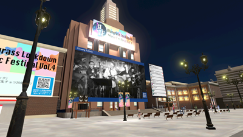

ブルーグラス音楽 × Virtual 空間 の融合フェス
-

-

-

- 
ブルーグラス音楽作品を募集し，それらをネット上のVirtual会場にてライブストリーミングで放送します。
ちょっと撮ってみた動画、リモートでメンバーと作った動画、過去のライブ演奏動画、練習したけどお蔵入りになっていた曲などを気軽に投稿してもらいたいです。
オンラインフェスには、地理的要因や時間的要因等でメンバーが集まりづらいバンドや、独創的な演奏にもスポットが当たる良さがあります。
一体感のある、即時性と非同期性を両立できるこのライブイベントの形式がブルーグラス音楽の発展の一助となればいいなと思っています。